Toybird Labs Blog
Ideas prácticas para trabajar y aprender mejor
Guías paso a paso para usar la IA generativa en el trabajo, además de consejos prácticos sobre aplicaciones para Mac, Windows y herramientas de aprendizaje.
Todos los artículos
Empieza por aquí
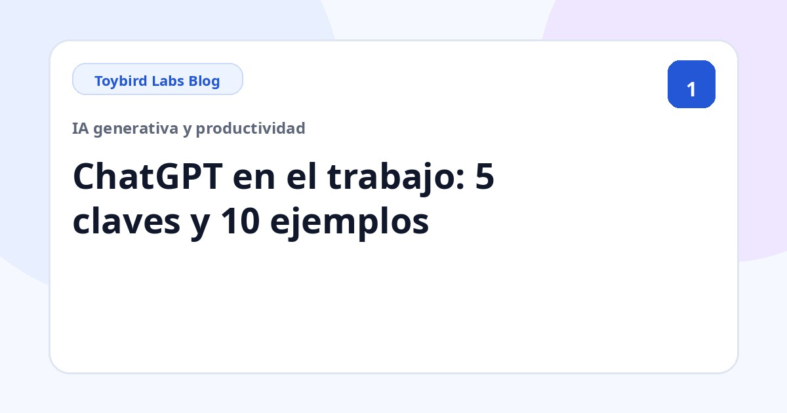
Cómo usar ChatGPT en el trabajo: 5 claves y 10 ejemplos de prompts
Aprende a usar ChatGPT en el trabajo con cinco hábitos prácticos, ejemplos de correo y reuniones, y diez tareas que puedes probar desde hoy.
Guías prácticas por tarea
Cómo redactar un correo de rechazo educado con ChatGPT
Redacta con ChatGPT un correo profesional para rechazar una solicitud, explicar la limitación, proponer una alternativa y dejar claro el siguiente paso.
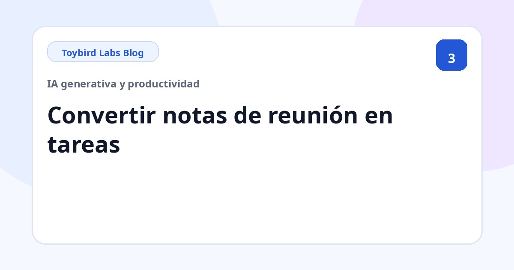
Cómo convertir notas de reunión en tareas con ChatGPT
Utiliza ChatGPT para separar decisiones, tareas, responsables, fechas límite y asuntos pendientes a partir de notas de reunión desordenadas.
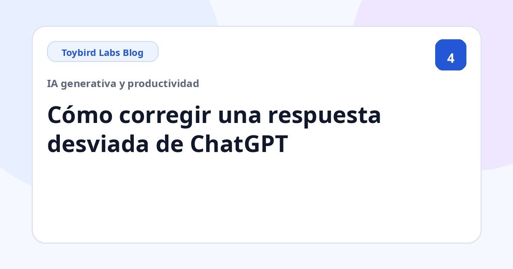
¿ChatGPT responde fuera de contexto? 6 causas y cómo corregirlo
Descubre por qué una respuesta de ChatGPT es demasiado larga, tiene un tono incorrecto o añade datos no respaldados, y corrígela con instrucciones concretas.
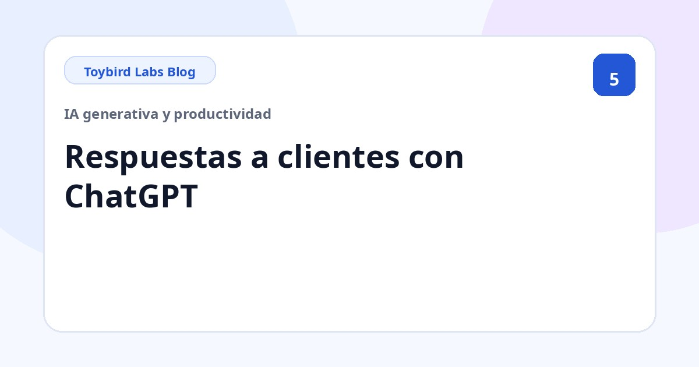
Cómo redactar respuestas a clientes con ChatGPT
Redacta correos de atención al cliente con ChatGPT separando el mensaje recibido, los hechos confirmados, las incógnitas y el siguiente paso.
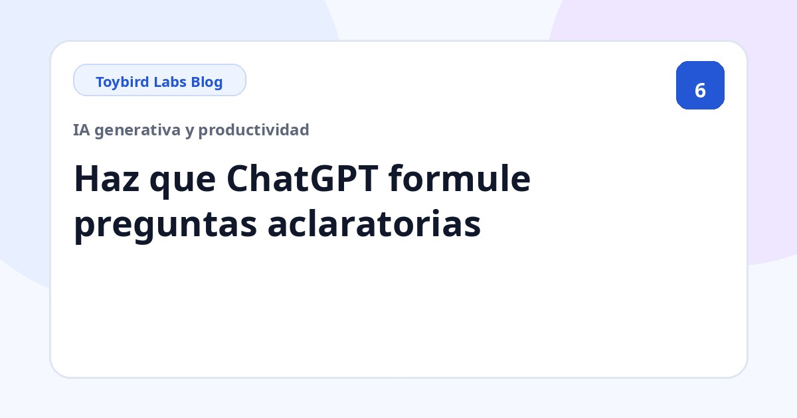
Cómo hacer que ChatGPT pida la información que falta
Utiliza prompts para que ChatGPT pida información ausente una pregunta cada vez, en una lista breve o mediante opciones.
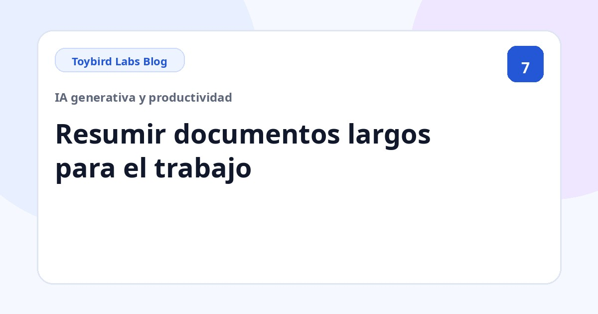
Cómo resumir documentos largos con ChatGPT para el trabajo
Resume documentos largos con ChatGPT definiendo el lector, la decisión, la extensión, las pruebas necesarias y el tratamiento de la información ausente.
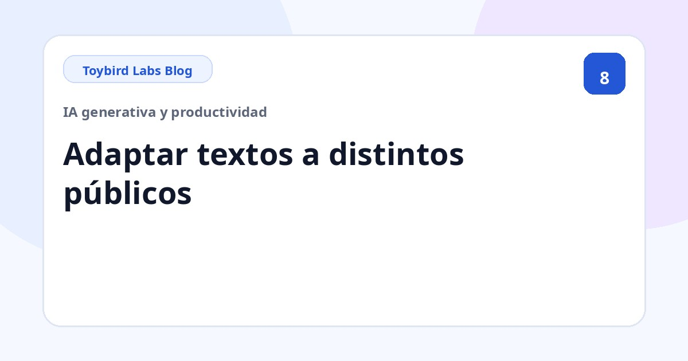
Cómo adaptar un texto a distintos públicos con ChatGPT
Utiliza ChatGPT para presentar los mismos hechos a clientes, dirección, equipos internos o principiantes sin cambiar el significado.
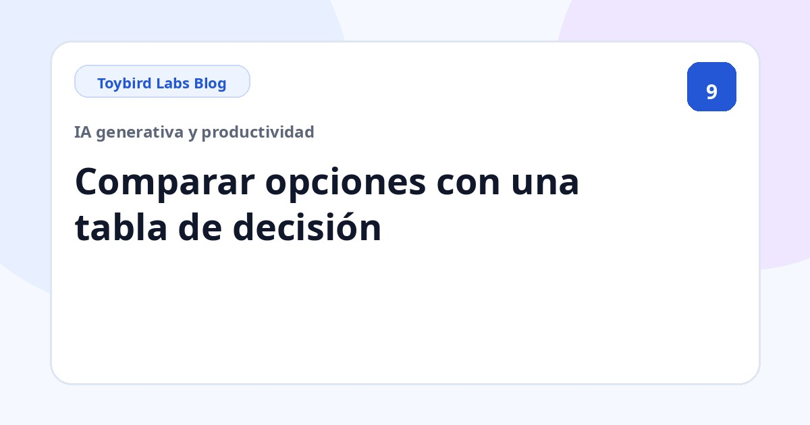
Cómo comparar opciones y crear una tabla de decisión con ChatGPT
Compara productos o servicios con ChatGPT definiendo criterios, prioridades, datos ausentes y condiciones para una recomendación.
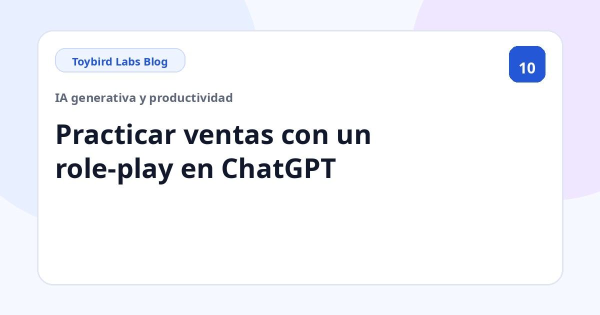
Cómo practicar reuniones de ventas con un role-play en ChatGPT
Configura un role-play comercial realista en ChatGPT con perfil del cliente, preguntas de una en una, objeciones y evaluación estructurada.
Mejorar la productividad en una sola pantalla de MacBook

Cómo trabajar mejor con una sola pantalla de MacBook y material de referencia
Aprende a trabajar con más productividad en una sola pantalla de MacBook mientras mantienes visible un PDF, una web o un chat. Compara mosaico, Split View, Stage Manager y una referencia flotante.

Cómo reducir el cambio de ventanas en Mac y mantener las referencias visibles
Reduce los cambios repetidos de ventana en Mac manteniendo visibles el PDF, la web, el chat o el panel que necesitas. Compara opciones del sistema y una referencia siempre visible.
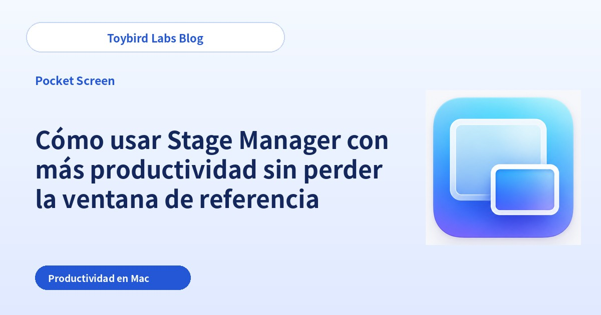
Cómo usar Stage Manager con más productividad sin perder la ventana de referencia
Usa Stage Manager en Mac sin perder repetidamente un PDF, una web o un chat. Compara el mismo grupo con una referencia flotante persistente entre conjuntos de trabajo.
Hacer más claras las reuniones remotas y las demos de producto
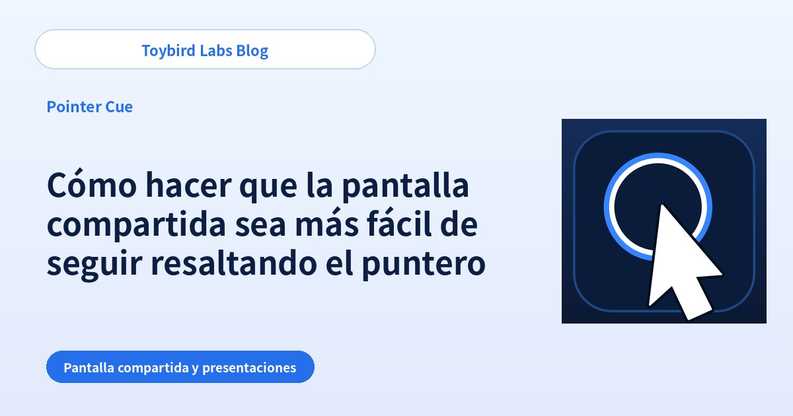
Cómo hacer que la pantalla compartida sea más fácil de seguir resaltando el puntero
Ayuda al público a seguir el puntero durante Zoom, Teams o Google Meet. Compara ajustes del sistema, ritmo de presentación y un anillo bajo demanda.
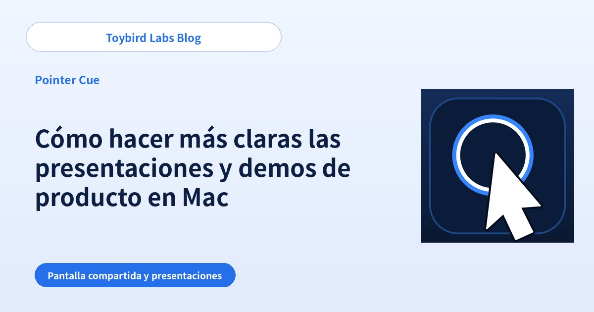
Cómo hacer más claras las presentaciones y demos de producto en Mac
Haz que las presentaciones y demos en Mac sean más fáciles de seguir dejando claro qué ventana importa. Compara limpieza, compartir una ventana y destacar la activa.
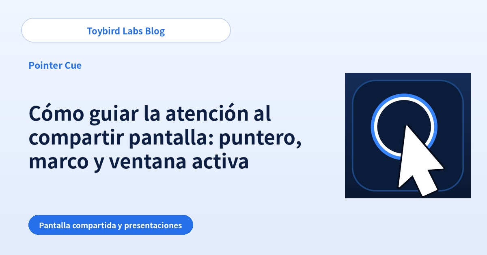
Cómo guiar la atención al compartir pantalla: puntero, marco y ventana activa
Haz que la guía sea más clara usando la señal adecuada: puntero para un control, marco para una zona y foco de ventana para la app actual.